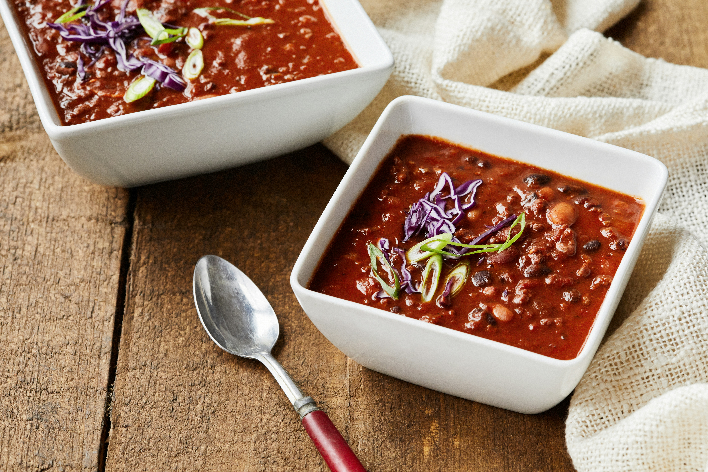

Back to Home
Homemade Chilli

Description
Chili con carne often shortened to chili, is a spicy stew of Mexican origin containing chili peppers (sometimes in the form of chili powder),
meat (usually beef), tomatoes, and beans. Other seasonings may include garlic, onions, and cumin.
The types of meat and other ingredients used vary based on geographic and personal tastes.
Recipes provoke disputes among aficionados, some of whom insist that the word chili applies only to the basic dish, without beans and tomatoes.
Ingredients
- 2 tablespoons olive oil
- 1 large onion, chopped
- 2 cloves garlic, minced, or more to taste
- 2 pounds lean ground beef
- 2 (16 ounce) cans kidney beans, rinsed and drained
- 1 (28 ounce) can diced tomatoes
- 1 (15 ounce) can tomato purée
- 1 cup water
- 1 (4 ounce) can chopped green chile peppers
- 2 tablespoons mild chili powder
- 2 teaspoons salt
- 2 teaspoons ground cumin
- 1 teaspoon ground black pepper
Steps
-
Heat oil in a large skillet over medium-low heat.
Add onion and garlic; cook and stir until onion is translucent, about 5 minutes.
Add ground beef; cook and stir until browned, 8 to 10 minutes.
-
Transfer beef mixture to a 6-quart slow cooker.
Stir in kidney beans, diced tomatoes, tomato purée, water, green chile peppers, chili powder, salt, cumin, and black pepper.
-
Cover the slow cooker. Cook on Low until flavors combine, 4 to 6 hours.
- Serve and enjoy.